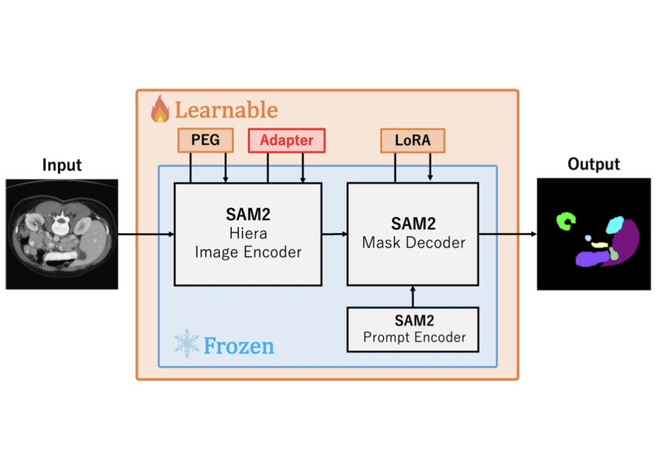
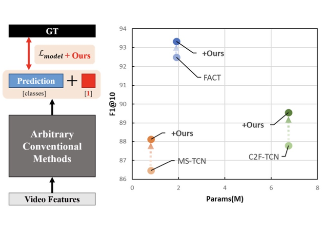
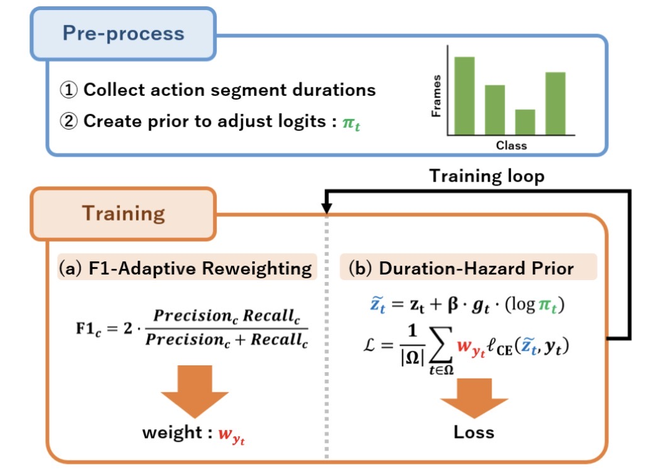
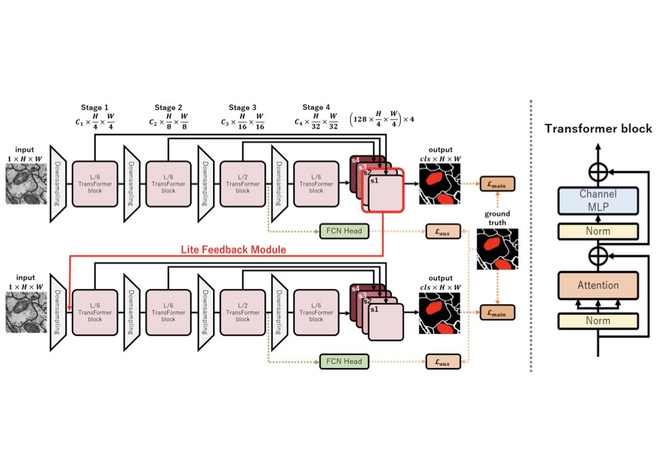
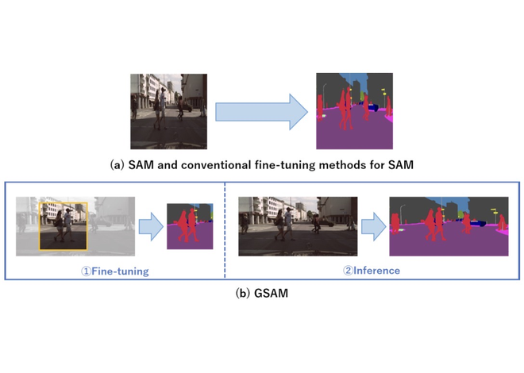

Hinako Mitsuoka and Kazuhiro Hotta,
"Human Brain-Inspired Network Using Transformer and Feedback Processing for Cell Image Segmentation",
IEEE Access, 13, pp.50918-50930, 2025. (impact factor=4.2, acceptance rate=27%)[PDF]
International Conferences (Refereed)

ICIP 2026
Hinako Mitsuoka and Kazuhiro Hotta,
"Prompt-Free and Efficient SAM2 Adaptation for Biomedical Semantic Segmentation via Dual Adapters",
IEEE International Conference on Image Processing (ICIP2026),
September, 2026, Tampere, Finland (Poster).
[PDF]

CVPR 2026 WS
Hinako Mitsuoka and Kazuhiro Hotta,
"Combining Boundary Supervision and Segment-Level Regularization for Fine-Grained Action Segmentation",
CVPR Workshop on Skilled Activity Understanding, Assessment and Feedback Generation (SAUAFG2026),
June, 2026, Denver, United States (Oral).
[PDF]

VISAPP 2026
Hinako Mitsuoka and Kazuhiro Hotta,
"Hazard-Aware Duration Prior and F1-Adaptive Loss for Temporal Action Segmentation",
International Conference on Computer Vision Theory and Applications (VISAPP2026),
March, 2026, Marbella, Spain (Oral).
[PDF]

ECCV 2024 WS
Hinako Mitsuoka and Kazuhiro Hotta,
"Accuracy Improvement of Cell Image Segmentation Using Feedback Former",
ECCV Workshop on Human-inspired Computer Vision (HCV2024),
October, 2024, Milan, Italy (Poster).
[PDF]

ECCV 2024 WS
Sota Kato, Hinako Mitsuoka and Kazuhiro Hotta,
"Generalized SAM: Efficient Fine-Tuning of SAM for Variable Input Image Sizes",
ECCV Workshop on Computational Aspects of Deep Learning (CADL2024),
October, 2024, Milan, Italy (Oral).
[PDF]